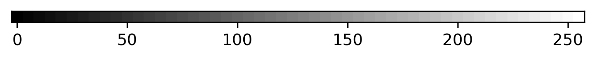
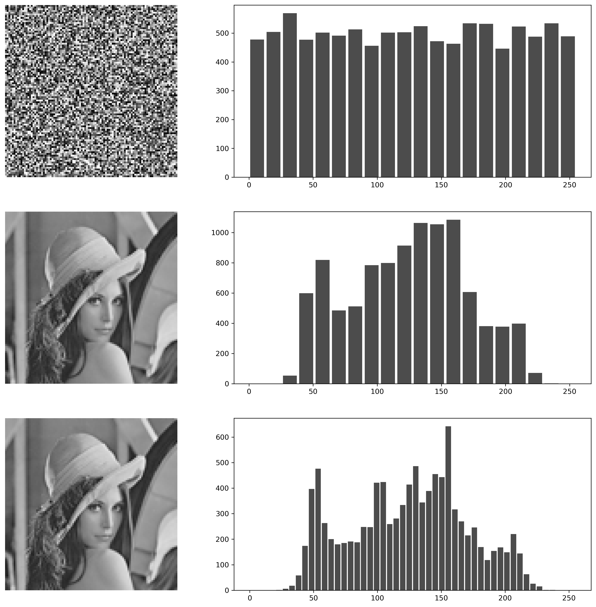
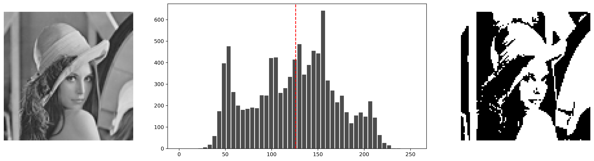
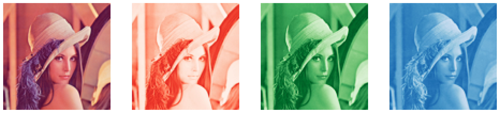
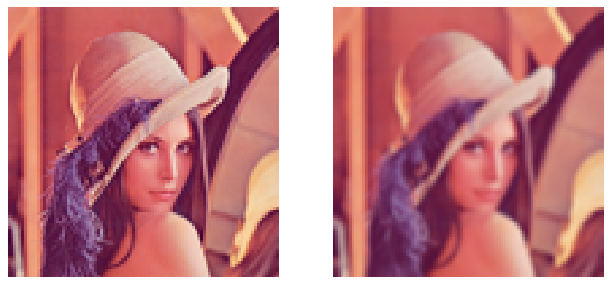
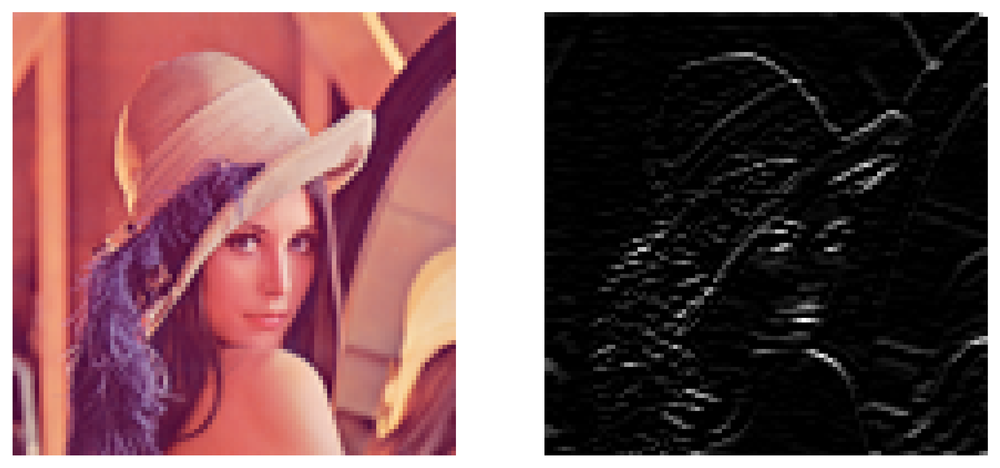
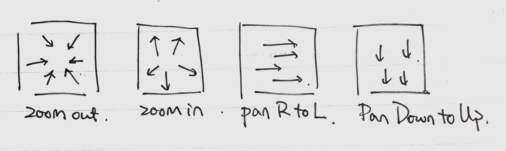

Learning Artificial Intelligence
The following notes are from SUSTech course "Artificial Intelligence B" taught in Fall 2023 by Prof. Jianguo Zhang.
Computer Vision
In the first half of the semester, we focused on computer vision.
Describing Images
Pixels
Digital images are just samples version of a scene. Mathematically, it is described as a matrix of pixels, \(\mathbf{I}\), in which the numerical value of each pixel represents the intensity of light signals.
For typical grey-scale images: 1 pixel = 1 byte = 8 bits, which can represent 256 different values (0-255). Where 0 is black and 255 is white.

A pixel can thus be described as \(\mathbf{I}_{i j} = x\), where \(i\) and \(j\) are the coordinates of the pixel and \(x\) is the intensity.
To invert an image, simply take:
With Contrast Scaling, we can adjust the range \(\mathbf{I}_{ij} \in [L, H]\) of current pixel values to a new range.
The output image \(\mathbf{C}\) will have pixel values in the range \([L', H']\).
Intensity Histograms
We can show the value of the image as a histogram. Where the x-axis corresponds to the intensity of the pixel and the y-axis corresponds to the count.

Quantization is important when we are comparing
With the normalized histogram \(h(x)\), we can calculate a lot of qualities of the image. For example, the mean \(\mu\), variance \(\sigma^2\), and entropy \(H(h)\) of the histogram can be calculated as follows:
Higher entropy means more information is contained in the image. The distribution with highest entropy is the uniform distribution.
If we have two images, we can then calculate the cross-entropy between the two histograms \(h_1(x)\) and \(h_2(x)\) of the images as follows:
Thresholding
Thresholds can be used to distinguish pixels within the image. The image after thresholding with value \(t\), \(\mathbf{T}\) can be calculated as follows:
This essentially is separating the pixels into two groups. For example, if we cutoff at 128 for the Lenna image, we get:

It might be obvious that the histogram will be a lot of help when we are trying to find an optimal threshold to separate two objects.
Otsu's Method
How to determine the thresholds for separation is a common problem in computer vision. Otsu's method is a popular algorithm to find the optimal threshold for separating two classes in an image.
Intuitively if we think about it, when separating the pixels into two classes, we want the classes to be as different as possible, within one class, the pixels should be as similar as possible.
In mathematical terms, we want to maximize the between-class variance while minimizing the within-class variance. Which surprisingly, are the same thing. Because mathematically, the total variance is the sum of these two variances.
If \(\sigma_t\) is the total variation, \(\sigma_b\) and \(\sigma_w\) are the variances between groups and within groups, then:
Where \(w_0, w_1\) are separate weights of these classes.
We then find the threshold \(t\) which maximizes \(\sigma_b\).
import numpy as np
def otsu_intraclass_variance(image, threshold):
"""
Otsu's intra-class variance.
If all pixels are above or below the threshold, this will throw a warning that can safely be ignored.
"""
return np.nansum(
[
np.mean(cls) * np.var(image, where=cls)
# weight · intra-class variance
for cls in [image >= threshold, image < threshold]
]
)
# NaNs only arise if the class is empty, in which case the contribution should be zero, which `nansum` accomplishes.
# Random image for demonstration:
image = np.random.randint(2, 253, size=(50, 50))
otsu_threshold = min(
range(np.min(image) + 1, np.max(image)),
key=lambda th: otsu_intraclass_variance(image, th),
)
K-means Clustering
We can first separte the pixels according to the mean of all pixels, \(\mu\). Then, we set the threshold to the middle point of the mean of the two clusters.
Repeat this process multiple times until \(t\) converges to a certain value.
Change Detection and Background Extraction.
Videos can be seen as a sequence of images \(\mathbf{I}(i,j,t)\).
For the human eye, a frame rate of 25Hz is considered smooth.
Detection of Change
We can define the temporal difference of the images, \(\mathbf{D}(i,j,t)\) as:
A difference is considered interesting if the difference surpasses a certain threshold. The resulting difference of interest, \(\mathbf{D}'\) is:
Background Extraction
The adaptive background \(\mathbf{B}(i,j,t)\) is a kind of mean that can ignore the moving things and preserve the inanimate backgrounds.
Another way of definition can also be:

As we can see from the example. A very long truck came into the parking lot in image 5. After parking in image 6, the truck is no longer moving, and gradually blends into the background.
This moving avarage is not only useful in background extraction, but also useful in other momentum-related methods such as ADAM.
Other background extraction methods fits Normal distributions to the pixel intensities. Which can fit the mean and variation as time progresses. Allowing some variations in the pixel intensities.
Colours
In nature, colour comes from interactions between the electromagnetic waves and our cones in the retinal. Our eyes can only see the electromagnetic waves with wavelengths between 400-700nm.
RGB Colour Space
One of the ways to measure colour (in order to match our perception methods with the eye), is the RGB colour space. Where each colour is represented as a mixture of certain amounts of red, green and blue.

You can covert the RGB colour space to grey-scale by taking the average of the three channels, or with a specific formula:
Which produces (in my opinion) similar results.
Apart from the RGB colour space, there are other colour spaces such as HSV (Hue, Saturation, Value).
Comparing Coloured Images
To compare two coloured images, instead of drawing separate histograms for each channel, we can index the pixels with a single value, \(v\), which is a combination of the three channels: $\(v = \mathbf{I}_{red} + 256 \cdot \mathbf{I}_{green} + 256^2 \cdot \mathbf{I}_{blue}\)$
Then, we can use the value histogram to calculate the distances between two images.
Sampling and Fourier Transform
The sin wave can be described as a function of time:
Where \(A\) is the amplitude, \(f\) is the frequency, and \(\phi\) is the phase.
In the real life, you can only measure (or sample) some fraction of the real data. The sampling rate is the number of samples per second, \(f_s\).
The Nyquist-Shannon sampling theorem states that to reconstruct a signal without aliasing, the sampling rate must be at least twice the highest frequency in the signal. Otherwise the high frequency components of the signal will be lost.
The Fourier Transform is a mathematical operation that transforms a signal from the time domain to the frequency domain. It decomposes a function into its constituent frequencies in a linear manner.
The continuouse Fourier Transform in 2D space is defined as:
Recall the Euler's formula \(e^{ix} = \cos(x) + i \sin(x)\). Where the \(u, v\) are the corresponding frequencies in the \(x\) and \(y\) directions.
The process can be inversed by the Inverse Fourier Transform:
For a "sampled" image, the Discrete Fourier Transform (DFT) is defined as:
Where \(M\) and \(N\) are the dimensions of the image. It also, of course, can be inversed by the Inverse Discrete Fourier Transform (IDFT):
After Fourier Transform, the resulting \(\mathcal{F}(u,v)\) is a complex number. The magnitude and phase can be calculated as follows:
Also, we shift the zero-frequency component to the center of the spectrum for better visualization.
Convolution and Filtering
Convolution is a mathematical operation that combines two functions to produce a third function. It can be imagined as a sliding window operation, where one function is flipped and slid over the other function, and the overlapping values are multiplied and summed to produce the output.
In a continuous 1D space, the convolution of two functions \(f(t)\) and \(g(t)\) is defined as:
In a discrete 2D space, the convolution of an image \(\mathbf{I}(i,j)\) with a kernel \(\mathbf{K}(m,n)\) is defined as:
Where \(k\) is the radius of the kernel.
An interesting property of convolution is that when combined with the Fourier Transform, it becomes a multiplication operation in the frequency domain:
This can be proved mathematically:
Suppose: \(w = t - \tau\), then \(dt = dw\) and the limits of integration change accordingly.
Which is the multiplication of the Fourier Transforms of \(f\) and \(g\).
Convolution is usually used for filtering images. For example, a Gaussian filter can be used to blur an image and reduce noise.

We could of course infer from the Fourier Transform property, that the Gaussian filter in the frequency domain is a Gaussian function, which is a low-pass filter. It removes high-frequency components from the image, resulting in a smoother image.
It can also be used for pattern detection. A kernel with 1 in the middle row and -1 in the surrounding can be used to detect edges in an image. In fourier space, consider only keeping the information at a specific frequency.

Two types of noise can be added to an image: Gaussian noise and Salt-and-Pepper noise. Gaussian noise is a random noise that follows a Gaussian distribution, while Salt-and-Pepper noise is a random noise that adds white and black pixels to the image.
The Gaussian filter can be used to reduce Gaussian noise.
Scaling Space
In an image, informations are contained in different scales. These informations contained in a specific scale is known as the scale space.
A linear scale space is a continuous function of scale, \(s\), which is defined as:
Where \(G(x, y, s)\) is a Gaussian function with scale \(s\). In this method, different gaussian filters with different variances are applied to the image.
With Gaussian pyramids, we can create a multi-scale representation of the image. The Gaussian pyramid is a series of images, each with a different scale, created by applying Gaussian filters with different variances to the original image.
Since the size of the detector is often fixed, the size of the image is changed by resampling.
Edges
Edges are abrupt changes in the intensity of the image. These changes can be caused by surface normal discontinuity, depth discontinuity, surface colour discontinuity.
The gradiant of an image can be calculated as:
Where \(\nabla\) is the nabla operator, which is a vector operator that represents the gradient of a function.
The direction of the gradient is:
In a discrete image, the gradient can be approximated by using finite differences:
Or even more simply:
If we calculate the magnitude of gradiant right away, the intensity of gradient will be influenced severely by noise. Instead, we can first smooth the image with a Gaussian filter, and then calculate the gradient.
Since convolution is associative, the derivative of a convolution can be calculated as: $\(\nabla (\mathbf{I} * \mathbf{G})(i, j) = \mathbf{I} * \nabla \mathbf{G}(i, j)\)$
So, precomputing the gradient of the Gaussian filter, \(\nabla \mathbf{G}(i, j)\), and convolving it with the image will give us the gradient of the image and save computation time.
Canny Edge Detection
Canny edge detection is a popular algorithm with the following steps:
- Smoothing: Apply a Gaussian filter to the image to reduce noise.
- Gradient Calculation: Calculate the gradient of the image. \(Theta\) are approximated to [0, 45, 90, 135] degrees.
- Non-Maximum Suppression & Double Thresholding: Thin the edges by suppressing non-maximum pixels in the gradient direction. So that we can obtain a very thin edge.
- Edge Tracking by Hysteresis: Connect weak edges to strong edges if they are connected, and discard weak edges that are not connected to strong edges (according to the double thresholding).
Optical Flow
Motions are important for the detection of differences.
To immitate the motion in 3D real space, suppose an object is at \(\mathbf{X} = (x, y, z)\) and it forms an image at \(\mathbf{X}'(x', y')\) on the image plain.
The velocity is defined as the change of position over time:
For the 2D image, the velocity is defined as:
For the optics, their exists an equilatteral triangle between the 3D point, the camera, and the image plane.
Where \(f\) is the focal length of the camera.
So \(x'=fx/z\) and \(y'=fy/z\).
The velocity of the image point can be calculated as:
This can be simplified to:
The equation describes the relationship between the velocity of the image point and the velocity of the 3D point.

There are four types of motions in a video: - translation at constant depth - translation in depth - rotation at constant depth - rotation in depth
Optical flow is the apparent motion of brightness patterns in the image. With some key assumptions: - The brightness is consistent over time. - The motion is small. - The motion is smooth. Meaning that points move like their neighbours.
During motion, the two points are \(\mathbf{I}(x, y, t)\) and \(\mathbf{I}(x + dx, y + dy, t + dt)\).
With Taylor expansion, the point at \(t+1\) can be approximated as: $\(\mathbf{I}(x + dx, y + dy, t + dt) \approx \mathbf{I}(x, y, t) + \frac{\partial \mathbf{I}}{\partial x} dx + \frac{\partial \mathbf{I}}{\partial y} dy + \frac{\partial \mathbf{I}}{\partial t} dt\)$
Assuming a tiny change, we can then rearrange the equation to get:
Where \(\nabla \mathbf{I}\) is the gradient of the image, and \(\mathbf{V}\) is the velocity of the image point.
This equation is known as the Optical Flow Constraint Equation. It describes the relationship between the gradient of the image and the velocity of the image point.
In this equation, if \(\mathbf{V} \perp \nabla \mathbf{I}\), then the image point is moving in the direction of the edge. Optical flow cannot detect this kind of motion. This phenomenon is known as the aperture problem, or the barber illusion.